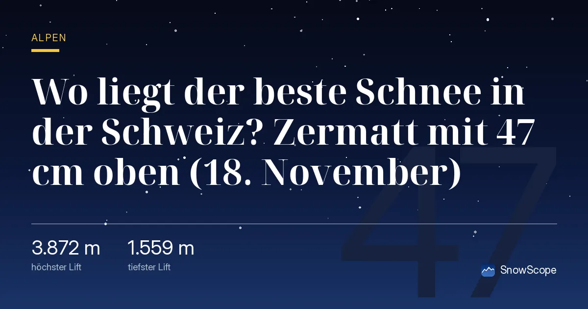

Wo liegt der beste Schnee in der Schweiz? Zermatt mit 47 cm oben (18. November)
Schnee-Check für Mittwoch, 18. November: 14 von 14 Gebieten in der Schweiz sind oben weiß, am meisten liegt in Zermatt (47 cm).
Die Live-Schneeprognose für Zermatt in der SnowScope-AppSchneehöhen, Pulverschnee-Alarme und 3D-Karte, gratis.
Schnee im oberen Bereich
Die Hälfte der 14 Gebiete hat oben mehr als 28 cm, die andere Hälfte weniger.
Der Rest der Top fünf: Verbier (36 cm), Aletsch Arena (34 cm), Saas Fee (33 cm) und Crans-Montana (32 cm).
| Skigebiet | Schneehöhe | Neuschnee, 72 h | Erwartet, nächste Tage | Gipfel |
|---|---|---|---|---|
| Zermatt | 47 cm | 61 cm | 77 cm | 3.872 m |
| Verbier | 36 cm | 64 cm | 81 cm | 3.304 m |
| Aletsch Arena | 34 cm | 37 cm | 41 cm | 2.869 m |
| Saas Fee | 33 cm | 43 cm | 49 cm | 3.556 m |
| Crans-Montana | 32 cm | 53 cm | 68 cm | 2.872 m |
| Engelberg-Titlis | 28 cm | 30 cm | 45 cm | 3.040 m |

Gebiet für Gebiet
Zermatt hat oben 47 cm; die Lifte reichen bis 3.872 m. Neuschnee: 61 cm in drei Tagen, Vorhersage 77 cm bis 21. November.
Verbier: 36 cm im oberen Bereich (höchster Lift 3.304 m), 64 cm Neuschnee in 72 Stunden, bis 21. November weitere 81 cm.
Aletsch Arena: 34 cm im oberen Bereich (höchster Lift 2.869 m), 37 cm Neuschnee in 72 Stunden, bis 21. November weitere 41 cm.
Saas Fee: 33 cm im oberen Bereich (höchster Lift 3.556 m), 43 cm Neuschnee in 72 Stunden, bis 21. November weitere 49 cm.
Was in drei Tagen gefallen ist
Die letzten drei Tage brachten Verbier 64 cm, Zermatt 61 cm und Crans-Montana 53 cm.
Die nächsten drei Tage
Bis 21. November sagt die Vorhersage Verbier 81 cm, Zermatt 77 cm und Crans-Montana 68 cm.
Wenn ihr zwei Tage habt
Am meisten Schnee fürs Geld bei zwei Skitagen: Zermatt, mit 47 cm jetzt und 77 cm mehr bis 21. November.
Für einen Kurztrip früh starten und die höchsten Lifte zuerst fahren, dort liegt meist der beste Schnee.
Freeride und Skitouren
Mit bis zu 64 cm Neuschnee werden die ersten Spuren neben der Piste weich. Vorher den Lawinenlagebericht lesen und in bekanntem Gelände bleiben: Neuschnee auf dünner Unterlage versteckt Steine.
So eine frische Schicht macht den Unterschied zwischen abgekratzten Pisten und griffigem Schnee, gerade auf steilen Abfahrten.
Tipps für Skifahrer
- Früh starten: Nach einer kalten Nacht ist der Schnee in den ersten Stunden am besten.
- Winterreifen oder Ketten für die letzten Kilometer zu den hohen Gebieten.
- Abseits der Piste nur nach dem Lawinenlagebericht.
Zu diesen Zahlen
Die Schneehöhen der Skigebiete sind der meiste Schnee in den oberen Hängen laut SnowScope-Schneemodell (etwa 1 km, Lauf vom 18. November); es sind Schätzungen für eine Fläche, keine Messung an einem Punkt. Werte von Messstationen sind Messungen am angegebenen Tag. Prognosen können sich ändern. Lies vor dem Freeriden immer den offiziellen Lawinenlagebericht.
Diesen Bericht zitieren
Für Forschung, Lehre oder Presse: Zahlen und Grafiken sind unter CC BY 4.0 mit dieser Quellenangabe frei nutzbar.
SnowScope (2026), Wo liegt der beste Schnee in der Schweiz? Zermatt mit 47 cm oben (18. November), https://snowscope.app/blog/de/2026/11/schneehoehen-schweiz-18-november-2026.html, abgerufen am 2026-11-18
SnowScope (Atlas Labs). (2026, November 18). Wo liegt der beste Schnee in der Schweiz? Zermatt mit 47 cm oben (18. November). SnowScope snow reports. https://snowscope.app/blog/de/2026/11/schneehoehen-schweiz-18-november-2026.html
BibTeX
@misc{snowscope2026schneehoehenschweiz18nov,
author = {{SnowScope (Atlas Labs)}},
title = {Wo liegt der beste Schnee in der Schweiz? Zermatt mit 47 cm oben (18. November)},
year = {2026},
month = nov,
howpublished = {\url{https://snowscope.app/blog/de/2026/11/schneehoehen-schweiz-18-november-2026.html}},
note = {Published 2026-11-18 12:04 UTC; accessed 2026-11-18}
}· CC BY 4.0 · Methoden, Daten und Werkzeuge →
Zermatt: Schnee und Temperatur nach Höhe, dieser Winter vs letzter (Werkzeuge) →
Zermatt folgen
Gratis: eine Nachricht, wenn Neuschnee kommt, und jeden Morgen die Vorhersage.
Weitere Schneeberichte

Zermatt in Zahlen: wo der Schnee hält, die sichersten Monate und die Anreise ins autofreie Dorf, aus 46 vergangenen Wintern.

Zermatt hat heute in den oberen Höhen 47 cm, 690% über dem November-Median. Die 0°C-Grenze bleibt bis Freitag über 2.200 m.

Gletscherskifahren ab 68 EUR am Tag: Wir haben sieben Gletscher in Frankreich, Österreich, Deutschland und der Schweiz nach Preis und nach dem Schnee verglichen, den sie im Dezember normalerweise bieten.